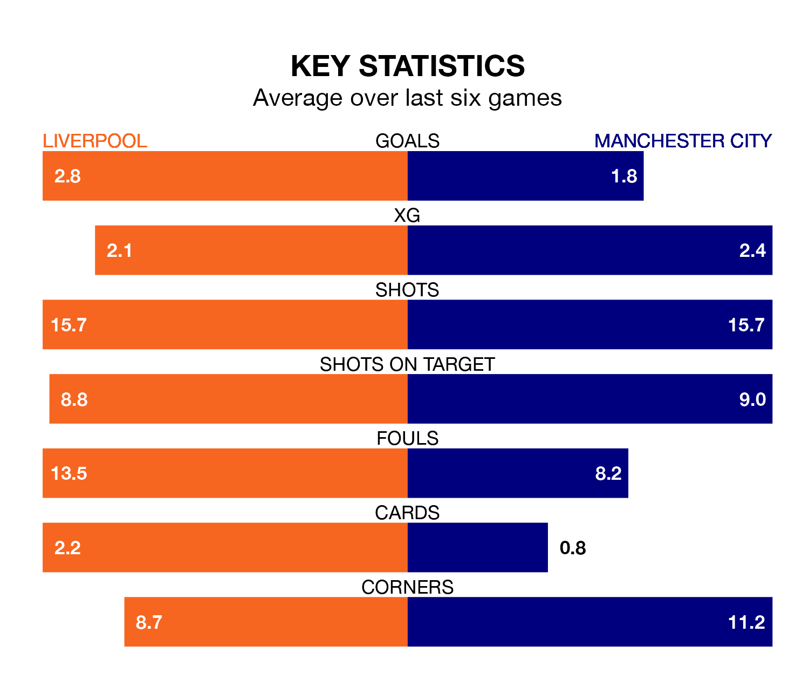

The Premier League's top two sides face each other at Anfield in Sunday's kick-off, when Liverpool host second-placed Manchester City.
Liverpool have picked up 19 wins and six draws from 27 games so far this season, and sit one point above the visitors going into the 3.45pm match.
The Citizens, meanwhile, have won 19 and drawn five, picking up 62 points.
With 64 goals in 27 games so far this season, Liverpool are the league's second-highest scorers with 2.4 goals per game. And they are conceding fewer than average, letting in 25 goals at a rate of 0.9 per game.
City are also above average scorers, with 2.3 goals per game, compared to a league average of 1.6. They have conceded 1.0 goal per game.
In Erling Haaland, the Citizens have the league's most on-form striker so far this season. He has notched 18 goals in 22 appearances.
His goal rate of one every 102 minutes is quicker than that of Mohamed Salah, the Reds' top scorer with a goal every 119 minutes, and a total of 15 goals in 21 games.
The hosts are in fantastic form in the Premier League, with five wins and one loss from their last six games.
But with five wins and a draw over that period, the away team's form is even better – they have taken 16 points from 18, compared to Liverpool's 15.
In the last 10 years, Liverpool and City have played each other on 28 occasions. Liverpool won 13 of them, City seven, and they drew eight times.
On average, the Reds scored 1.8 goals and the Citizens 1.7 in those matches.
Their last meeting was on November 25, when they played out a 1-1 draw.
Liverpool's last match was on March 2, a 1-0 win against Nottingham Forest, with Darwin Núñez getting the goal for the Reds.
City beat Manchester United 3-1 last time out, on March 3, with Phil Foden (two) and Braut Haaland on the scoresheet.
Sunday's match will be refereed by Michael Oliver, who has taken charge of 18 Premier League games so far this season, issuing four red cards and booking 76 players. He has awarded four penalties.
The last Liverpool game Oliver refereed was a 4-1 away win against Brentford on February 17. His last City match was their 1-0 loss away at Arsenal on October 8.
Updated: 09:34 (UTC), 08/03/24